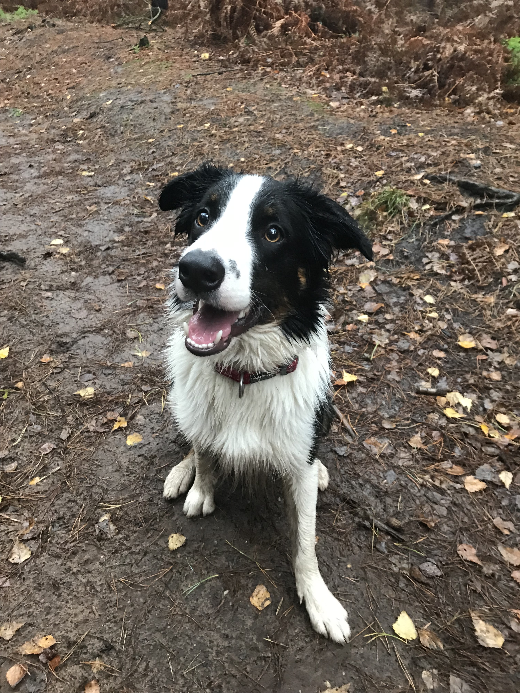
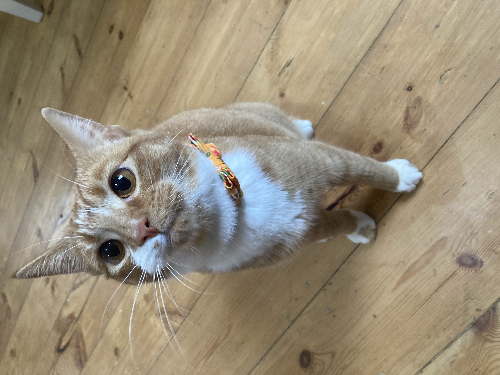

You get to meet the cutest pets around!
I may be biased, but I think these three pets are adorable! The two dogs, Phoebe and Leo, live in Milton Keynes with my family. My cat, Juniper, lives with us in London. Although they have met once, it wasn't puppy love at first sight. So if we ever need them in the same house, it's separate rooms for them - sibling rivalries, am I right!?
PHOEBE
LIKES: playing in the park and chasing Leo with the ball. Belly rubs and cuddles
DISLIKES: getting groomed and not being able to cuddle people who make eye contact with her
AGE: beautiful Pheeb is coming up on 8 years old now - reaching golden oldie territory
HOBBIES: toys. toys. sleep. cuddle. toys.
LEO
LIKES: playing in the park and having Phoebe chase him. Leo loves food
DISLIKES: being left on his own (especially without Pheeb!)
AGE: acts like a full baby, is actually 4
HOBBIES: tennis balls for days! Cuddling up to people and giving no personal space

JUNIPER
LIKES: Juniper likes to lounge around all day in the sunshine, and eat her favourite snack - dreamies.
DISLIKES: Anything loud and unfamiliar. Being told no. Any snacks not dreamies.
AGE: born on April Fool's Day 2019.
HOBBIES: Juniper likes to play string toys, eat food, and wake her pawrents up at 4am every morning.

